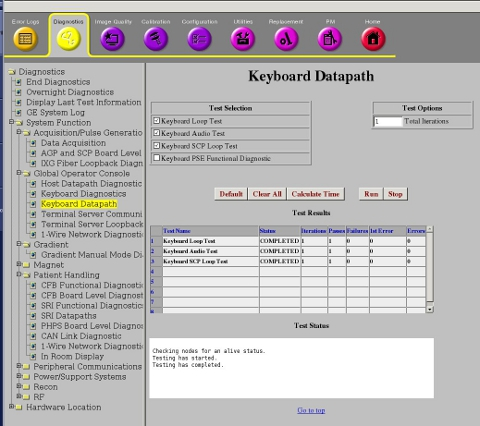
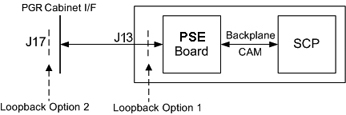

Operating Documentation
Direction 5670006, Rev# 1
Discovery MR750w GEM Service Methods
Module Version 2.0, Version Date 10/12/11
Operating Documentation |
Diagnostics >> System Function>> Global Operator Console>>Keyboard Datapath
Diagnostics >> Hardware Locations>> Global Operator Console>>Keyboard Datapath
Illustration 1: Keyboard Datapath

This diagnostic verifies that the SCIM (Keyboard Processor) serial communication path is working with a loopback connector external to the PSE board.
Click [Calculate Time] to get an estimate of the time it takes to run the selected diagnostics.
The SCIM serial communication path is tested from the SCP across the CAM Backplane to the PSE, and from the PSE across any cables between the PSE and the loopback connector. The SCIM is not tested.
Before running this test, you must install a DB 25 loopback connector (P/N 5395500, part of Service Cable Kit P/N 5306523) external to the PSE board on the SCP to SCIM communication path. The loopback connector can be installed:
Directly on the PSE.
On the outside of the PGR Cabinet Interface.
Illustration 2: SCIM External Loopback Block Diagram

The SCP transmits a data packet through the SCIM serial port on the SCP board.
The serial data is looped back externally to the PSE board.
The SCP verifies that it received the same data that was sent.
Do not change the Test Options settings from the default settings unless instructed to do so by a GE Healthcare engineer. There are very few circumstances when these settings need to be changed.
After the SCIM communication path is broken to install the loopback connector, the emergency stop is triggered. Press the EMO Reset on the PDU to recover after the SCIM communication path is restored.
Output values pass or fail. In the event of failure, the details of the failure can be found in the GE System Log.
In the case of errors, you can click the 1st Error number to see the nature of the error. GE recommends that you view the GE System Log to view all the errors that were recorded.
If this test fails, the possible reasons are:
Loopback connector is defective or not installed.
Any cable between the loopback connector and the PSE board.
CAM Backplane is defective.
PSE board is defective.
SCP board is defective.
If the test passes with the loopback connector directly on the PSE, but fails with the loopback connector on the outside of the System Cabinet, then the cable from the PSE to the System Cabinet Interface or the System Cabinet Interface connector is defective.
If the test fails with the loopback connector directly on the PSE, then the problem is either the PSE board, CAM Backplane, or the SCP. Run the SCP loopback test to determine if the SCP is defective. If the SCP loopback test succeeds, check for bent or missing pins where the PSE board and SCP board connect.